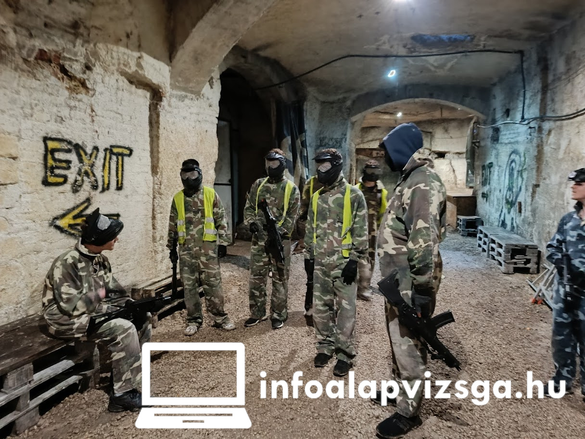

Airsoft
Az interaktív hadgyakorlatok világa
Az airsoft egy (6 vagy 8 mm átmérőjű műanyag vagy biológiailag lebomló) gömbkövedéket külövő, „alacsony” energiájú légfegyverekkel játszott hobbi-sport gyűjtőneve.
Fő irányzata egyfajta szimuláció, melyben két csapat játszik egymás ellen egy terepakadályokkal szabdalt pályán. A játékok lehetnek ún. végküdlősak vagy visszaállósak, attól függően, mekkora pályán játszzák ezeket, illetve hány fő vesz bennük részt. Továbbá, hogy a játékszervező miként rendelkezik. Cél egy adott feladat teljesítése, ami lehet pl. terület elfoglalása, valamilyen céltárgy megszerzése, fontos személy útvonalon való végigkísérése stb.
A gömbkövedékek nem hagynak festéknyomot, így az eltalált játékosnak kell a találatot jeleznie. Az airsoft tehát a résztvevők becsületességén, korrektségén alapszik – inkább komoly hobbi, mint versengsportok.
Az airsoft rövid története
Az airsoft-hobbi az 1970-es évek közepén Japánban indult. Az ottani szigorú fegyverszabályozás miatt az airsoft légfegyverek karrierje is innentől (vel felfelé. Hamarosan ársai hódítás következett, főleg Hongkongban. Jelenlegi főbb országok, ahol az airsoft üzik: Japán, USA, Kanada, Hongkong, Anglia, illetve a közelünkben Szlovénia, Szlovákia, Olaszország, Ausztria, Horvátoország. Hazánkban 2004-ig egy-két helyi közösség elszigetelten üzte az airsoftot; azóta -az internetnek köszönhetően- a szervezések rendszeressé, és főleg országossá váltak.
Ki játszhatja az airsoftot
A használt eszköz jellege és a jogi státusza miatt a hivatalosan vagyis nagyobb körben publikált játékokon a játék szervezők kiköthetnek és általában ki is köthet minimális életkort.
Összességében az airsoft nem veszélyesebb mint egy átlagos csapatsport, a minimum életkorhatár üzenlettő év, üzemharmadik életévüket be nem töltött személyek csak egy nagykorú játékos felügyelete mellett, írásos szülői engedéllyel vehetnek részt játékon.
Nincsenek kifejezett fizikai korlátozások, az airsoft játék mégis igényel némi fizikai állóképességet és mozgáskoordinációt a futás, kúszás, guggolás és hasonló mozdulatok miatt.
BB-k tömege
| Tömeg (gramm) | Felhasználás | Megjegyzések |
|---|---|---|
| 0,12 | Alacsony energiájú, nem hop-up-os fegyverek, airsoft grándívető, aknak | Színes, nagy lótáv, érzékeny a szélre és terepirányakra |
| 0,20 | Alap energiájú fegyverek (0,7-1,2 J) | Leggyakoribb és legolcsóbb, kezdőknek ajánlott |
| 0,23 | Közres megoldás a 0,20 és 0,25 gramm között | Kevésbé népszerű |
| 0,25 | Nagyobb energiájú AEG fegyverek | Sebb röppálya, jobb főkép, nagyobb áthatolás |